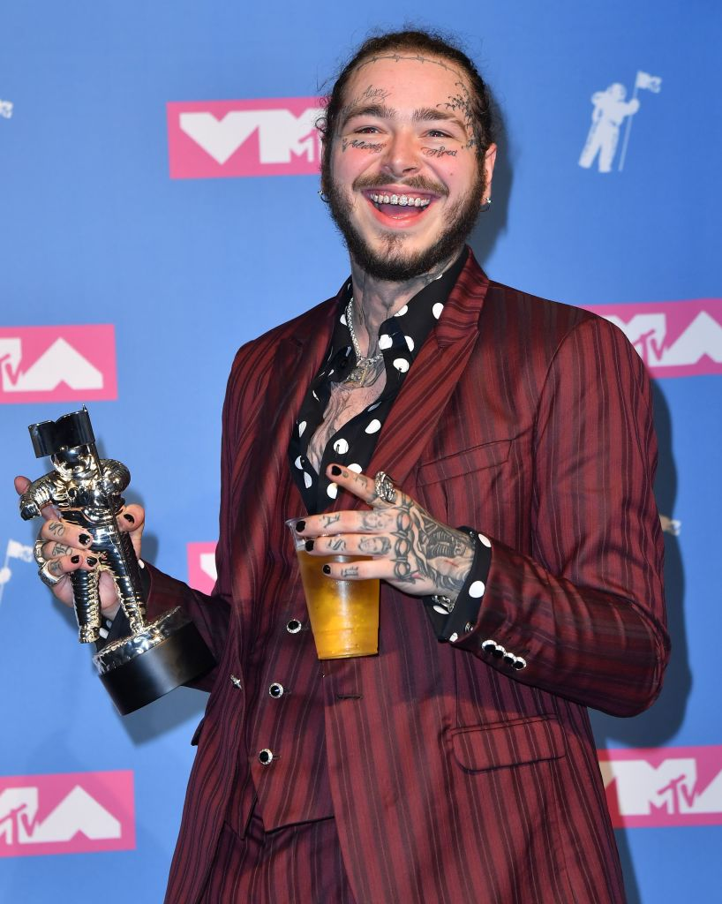
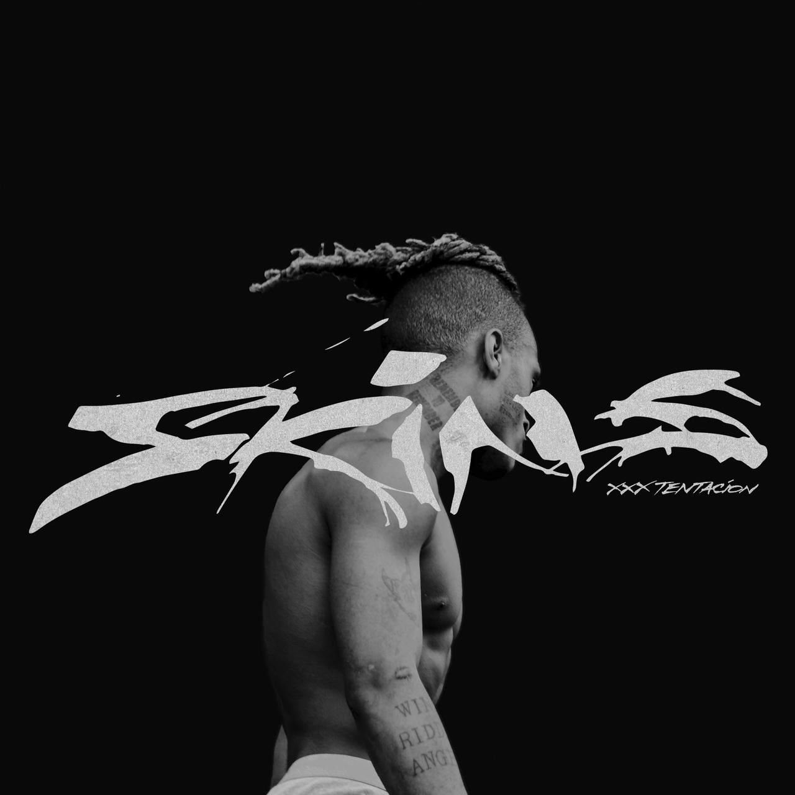

"The Remedy for a Broken Heart (Why Am I So in Love)" 2:40
"Floor 555" 1:33
"Numb" 3:06
"Infinity (888) (feat. Joey Bada$$)" 2:56
"Going Down!" 1:55
"Pain = Best Friend (feat. Travis Barker)" 1:50
"$$$ (feat. Matt Oxx)" 2:10
"Love Yourself (Interlude)" 0:48
"Smash! (feat. PNB Rock)" 1:49
"I Don't Even Speak Spanish LOL (feat. Rio Santana, Judah en Carlos Andrez)" 3:12
"Changes" 2:02
"Hope" 1:50
"Schizophrenia" 1:20
"Before I Close My Eyes" 1:39
About the artist
XXXTentacion, pseudonym of Jahseh Dwayne Onfroy (Plantation, January 23, 1998 - Deerfield Beach, June 18, 2018),
was an American singer, rapper and songwriter from Lauderhill, Florida. Onfroy broke through in America with his single "Look At Me".
He released two successful albums called 17 and ? (questionmark). 17 was released on August 25, 2017 and ? on March 16, 2018.
Onfroy was shot dead on June 18, 2018 in a robbery targeted at him.
About the album
? is the second studio album by American rapper XXXTentacion and the last to be released during his lifetime.
It was released on March 16, 2018, by Bad Vibes Forever, Caroline Distribution, and Capitol Music Group. It succeeds the release of his debut studio album 17 and the extended play A Ghetto Christmas Carol (both 2017).
The album was primarily produced by frequent collaborator Aiden O’Hara, and includes guest appearances from PnB Rock, Travis Barker, and Joey Badass, among others.
? debuted at number one on the US Billboard 200 making it XXXTentacion's first US number-one album.
On August 7, 2018, the album was certified Platinum by the RIAA.
Lil Skies
Life of a Dark Rose
"Welcome to the Rodeo" 2:49
"The Clique" 2:26
"Red Roses" (featuring Landon Cube) 4:23
"Lust" 2:36
"Cloudy Skies" 3:13
"Signs of Jealousy" 2:58
"Big Money" 2:35
"Tell My Haters" 2:00
"Boss Up" 2:36
"Garden" 3:05
"Lettuce Sandwich" 3:15
"Strictly Business" 2:39
"Kill4u" 3:01
"Nowadays" (featuring Landon Cube) 3:24
About the artist
Kimetrius Foose (born August 4, 1998), known professionally as Lil Skies, is an American rapper from Waynesboro, Pennsylvania currently signed to All We Got Entertainment through Atlantic Records.
His two top singles have appeared on the Billboard Hot 100: "I" (#35), "Nowadays" (#55), and "Red Roses" (#69).
His major label debut mixtape, Life of a Dark Rose, was released on January 10, 2018 and peaked at #10 on the Billboard 200 chart.
The album was certified Gold by the RIAA on November 9, 2018.
About the album
Life of a Dark Rose is the debut studio album by Lil Skies, released on January 10, 2018
by All We Got Entertainment and Atlantic Records. The album debuted at no. 23 and peaked at no. 10 on the Billboard' 200 albums chart.
Ski Mask The Slump God
STOKELEY
"So High" 2:29
"Nuketown" (featuring Juice Wrld) 2:46
"Foot Fungus" 2:09
"La La" 2:27
"Unbothered" 2:18
"Save Me, Pt. 2" (featuring Austin Lam) 3:08
"Adults Swim" 1:46
"Far Gone" (featuring Lil Baby) 3:56
"Get Geeked" 1:45
"Reborn to Rebel" 2:31
"Faucet Failure" 2:25
"U and I" 1:52
"Cat Piss" (featuring Lil Yachty) 2:46
About the artist
Stokeley Clevon Goulbourne (born April 18, 1996), known professionally as Ski Mask the Slump God (formerly stylized as $ki Mask "The Slump God"),
is an American rapper and songwriter. Originally well known and notable for his collaborations with fellow American rapper XXXTentacion and their collective Members Only,
he began to gain popularity in 2017 following the release of his songs "Catch Me Outside" and "Babywipe", which are both certified Gold by the RIAA.
About the album
Stokeley (stylized in all caps) is the debut studio album by American rapper Ski Mask the Slump God.
It was released on November 30, 2018, by Republic Records. The album features guest appearances from Juice Wrld, Austin Lam, Lil Baby and Lil Yachty.
Kodak Black
Project Baby 2
"Versatile" 6:58
"Change My Ways" 3:59
"Roll in Peace" (featuring XXXTENTACION) 3:33
"6th Sense" 3:14
"Don't Wanna Breathe" 3:16
"Need a Break" 4:03
"First Love" 3:08
"Unexplainable" 2:30
"My Klik" (featuring JackBoy and John Wicks) 3:25
"Transportin'" 2:49
"You Do That Shit" 2:21
"Built My Legacy" (featuring Offset) 3:04
"Misunderstood" 3:09
"Pride" 2:51
"Up Late" 3:29
"No CoDefendant" 3:31
"The Recipe" 3:19
"Still in the Streets" 3:20
"Me for Me" 3:52
About the artist
Bill K. Kapri (born Dieuson Octave; June 11, 1997), better known by his stage name Kodak Black, is an American rapper and songwriter.
He is noted for his singles "Zeze", "Roll in Peace", "Tunnel Vision", and "No Flockin", as well as his numerous legal issues.
About the album
Project Baby 2 (also called Project Baby 2: All Grown Up on deluxe version) is a mixtape by American rapper Kodak Black.
It was released on August 18, 2017, by Dollaz N Dealz, Sniper Gang and Atlantic. Debut Album sported features from rappers XXXTentacion, Offset, John Wicks, JackBoy, Birdman & Lil Wayne.
The mixtape was supported by the singles "Transportin'" and "Roll in Peace" featuring XXXTentacion. Both songs have charted on the US Billboard Hot 100, with "Transportin'" peaking at number 46 and "Roll in Peace" peaking at 31.
XXXTENTACION
17
"The Explanation" 0:50
"Jocelyn Flores" 1:59
"Depression & Obsession" 2:24
"Everybody Dies in Their Nightmares" 1:35
"Revenge" 2:00
"Save Me" 2:43
"Dead Inside (Interlude)" 1:26
"Fuck Love" (featuring Trippie Redd) 2:26
"Carry On" 2:09
"Orlando" 2:43
"Ayala (Outro)" 1:39
About the artist
XXXTentacion, pseudonym of Jahseh Dwayne Onfroy (Plantation, January 23, 1998 - Deerfield Beach, June 18, 2018),
was an American singer, rapper and songwriter from Lauderhill, Florida. Onfroy broke through in America with his single "Look At Me".
He released two successful albums called 17 and ? (questionmark). 17 was released on August 25, 2017 and ? on March 16, 2018.
Onfroy was shot dead on June 18, 2018 in a robbery targeted at him.
About the album
17 is the debut studio album by American rapper XXXTentacion. It was released on August 25, 2017, by Bad Vibes Forever and Empire Distribution.
It features 11 tracks and was supported by the lead single "Revenge". 17 is X's second solo commercial project, succeeding the compilation mixtape Revenge, also released in 2017.
It includes a guest appearance from Trippie Redd and uncredited vocals by Shiloh Dynasty, as well as production from XXXTentacion himself, Nick Mira, Taz Taylor, Dex Duncan, Natra Average,
Dub tha Prodigy, and Potsu, among others.
In August 2018, two months after XXXTentacion was murdered in Florida, the album was certified Platinum in the US.
The album won Favourite Soul/R&B album award at the American Music Awards.
Post Malone
Beerbongs & Bentleys
"Paranoid" 3:44
"Spoil My Night" (featuring Swae Lee) 3:14
"Rich & Sad" 3:23
"Zack and Codeine" 3:23
"Takin' Shots" 3:37
"Rockstar" (featuring 21 Savage) 3:39
"Over Now" 4:07
"Psycho" (featuring Ty Dolla Sign) 3:41
"Better Now" 3:50
"Ball for Me" (featuring Nicki Minaj) 3:27
"Otherside" 3:48
"Stay" 3:28
"Blame It on Me" 4:22
"Same Bitches" (featuring G-Eazy and YG) 3:31
"Jonestown" (interlude) 1:51
"92 Explorer" 3:32
"Candy Paint" 3:49
"Sugar Wraith" 3:47
About the artist
Austin Richard Post (born July 4, 1995), known professionally as Post Malone, is an American rapper, singer, songwriter and record producer.
Post Malone has gained recognition for blending various musical genres, for his introspective songwriting, and his laconic vocal style. Born in Syracuse, New York and raised in Grapevine, Texas,
Malone began his hip hop career following the release of his debut single "White Iverson" in 2015.
About the album
Beerbongs & Bentleys (stylized in all lowercase) is the second studio album by American rapper Post Malone,
released by Republic Records on April 27, 2018. It succeeds Malone's debut album Stoney, released in 2016. The album features
guest appearances from Swae Lee, 21 Savage, Ty Dolla Sign, Nicki Minaj, G-Eazy and YG. It includes production from frequent collaborators
Louis Bell and Frank Dukes, alongside London on da Track, Andrew Watt, Tank God, Twice as Nice, Teddy Walton, Scott Storch and PartyNextDoor, among others.
The album was certified double Platinum by the Recording Industry Association of America (RIAA). It was nominated for Album of the Year at
the 61st Annual Grammy Awards, with "Rockstar" being nominated for Record of the Year and Best Rap/Sung Performance. Additionally, "Better Now" was nominated for Best Pop Solo Performance.


XXXTENTACION
SKINS
"Introduction" 0:31
"Guardian Angel" 1:48
"Train Food" 2:44
"Whoa (Mind in Awe)" 2:37
"Bad!" 1:34
"Staring at the Sky" 1:25
"One Minute" (featuring Kanye West and Travis Barker) 3:17
"Difference" (Interlude) 1:16
"I Don't Let Go" 2:01
"What Are You So Afraid Of" 2:30
About the artist
XXXTentacion, pseudonym of Jahseh Dwayne Onfroy (Plantation, January 23, 1998 - Deerfield Beach, June 18, 2018),
was an American singer, rapper and songwriter from Lauderhill, Florida. Onfroy broke through in America with his single "Look At Me".
He released two successful albums called 17 and ? (questionmark). 17 was released on August 25, 2017 and ? on March 16, 2018.
Onfroy was shot dead on June 18, 2018 in a robbery targeted at him.
About the album
Skins (stylized in all caps) is the third studio album by American rapper XXXTentacion, released on December 7, 2018.
It is one of the projects XXXTentacion was working on before his death, and his first album to be released posthumously.
The lead single, "Bad!", was released on November 9. The album’s features include Travis Barker of Blink-182 and American rapper Kanye West.
On December 4, 2018, the album was leaked to multiple websites.
The album received mixed reviews from critics. Criticism was aimed at the album’s short length and “unfinished” nature.
Despite the negative critical reception, Skins was a commercial success, debuting at number one on the US Billboard 200, making it XXXTentacion's second US number-one album.
Logic
Bobby Tarantino II
"Grandpa's Space Ship" 2:02
"Overnight" 3:38
"Contra" 3:37
"BoomTrap Protocol" 3:41
"Yuck" 2:53
"Indica Badu" (featuring Wiz Khalifa) 4:20
"Midnight" 4:01
"Warm It Up" (featuring Young Sinatra) 4:00
"Wizard of Oz" 2:24
"State of Emergency" (featuring 2 Chainz) 2:34
"Wassup" (featuring Big Sean) 3:39
"Everyday" (with Marshmello) 3:24
"44 More" 3:08
About the artist
Logic (Rockville, Maryland, January 22, 1990) is the stage name of the American rapper Sir Robert Bryson Hall II.
He released several mixtapes, including Young, Broke & Infamous, Young Sinatra, Young Sinatra: Undeniable,
Welcome to Forever, Bobby Tarantino, Bobby Tarantino II and the albums Under Pressure, The Incredible True Story, Everybody and YSIV.
About the album
Bobby Tarantino II is the seventh mixtape by American rapper and musician Logic. It was released on March 9, 2018, through Def Jam Recordings and Visionary Music Group.
The mixtape features guest appearances from Logic's alter-ego, Young Sinatra, alongside 2 Chainz, Big Sean and Wiz Khalifa, with the production handled by Illmind, Marshmello and 6ix, among others.
Bobby Tarantino II serves as a sequel to Logic's mixtape, Bobby Tarantino (2016).
Bobby Tarantino II was supported by three singles: "44 More", "Overnight" and "Everyday" with Marshmello.